.png) 取消
取消
 27
27
老实说，若说是理县之行，范围有点大，确切说只是到了理县。 此文不算精彩游记，只是想把过程写出来以供需要的人参考。 源于突发奇想想要搭车旅游，不自驾，不跟团，不组队。 所带物品有：伞一把，洗漱用品，浴巾，内衣裤，袜子三双，泳衣，其他的就是一大包食物，我不喜欢吃那些所谓的零食，比较实在的带了卤牛肉之类的。 中秋完了第二天国庆1号出发。阴天，早上9：00am从家出发到茶店子汽车站大概11：00am，想要买当天到理县的车票已经没有了，买了第二天7:20am的，加保险73元/人到理县。途中没有遇到新闻中所说的出行高峰的样子，感觉一路上还是多顺利的，人也不算多。因为车票时间早，想要就近方便，于是决定在车站附近找住宿。车站旁边有一个车站住宿，二楼，上去看了实在不行，就出站找，结果方圆一公里范围内都找遍了没找到。茶店子汽车站周围没什么东西，所以还是决定回车站住宿。 车站住宿标间120元，其他双人、三人、很多人的普通间都有，几十块钱不等。住宿落实我们就搭地铁到春熙路晃了一圈，吃了一肚子火锅，9:00pm回车站。一晚上的折磨，住宿条件太差，水不够热，东西不够齐（回来的时候，车站外就有一群人在那吆喝住宿了，我们真是倒霉，要找的时候，一个选择都没有）建议最好不要在车站住宿，除非你第二天的车真的很早很早。。。那条件差的没话说，服务撇的没话说。。。 2号，大雨。6:00am起床（本人动作比较摸），7:20准时发车，大概过了都江堰就没怎么下雨了。在汶川小堵了一下，没有什么影响（没有出行高峰的景象）。到理县大概11点过吧，没看时间。下车就有很多师傅来问要不要车，小车20元一人，包车80元。 在这我要特别说明一下，我们没什么计划，听说旅游期间住宿不好找，理县至少也是个县城，实在不行就在理县住，其实问车的师傅一般都是送你过去会帮你找住宿。师傅们会说节假日期间，住宿不好找，到处都满了，贵得很之类的话。这是想象之中的，因为他们帮你找的都有点猫腻，不用全信他们的话。期间我们考虑因为昨晚的住宿太差，想先泡温泉放松一下，决定去古尔沟。但是师傅说古尔沟都爆满了，没住的，没温泉泡。最后帮我们问了一个说要260一间，温泉另算，山庄50元/人，源头15元/人，但是要包车去，25元/人,算下来也就是40元/人。老公说他们敲棒棒，不干。出了车站后面有一群师傅，不用担心可以一家一家问，找到一家古尔沟150元的。不过我们还是先去毕棚沟，问了一下毕棚沟住宿120元/人。（去之前又听说什么毕棚沟交警封路了，人太多了上不去，今天去不了了之类的话），那师傅保证把我们送上去。一路畅行，没有看到拥挤。 到毕棚沟大概中午一点过一点，师傅搭我们从沟口一路往凉台沟方向走，挨家问，都还是有住宿，就是价钱不一样。找了一家民宿，100元/间，讲了价80元/间。落实以后，吃了午饭。民宿可以点菜，小床，没电视，没电热毯，热水充足，洗漱方便（自备洗漱用品），因为之前看游记说那边住宿条件不好，所以有心理准备（不过比车站住宿好）。 吃过以后到民俗周围晃了晃。景色不咋样，风很大，只出了几分种太阳就一直阴天。
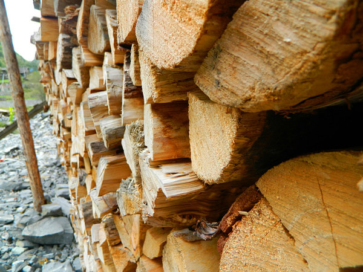
那边家家都堆了柴堆。
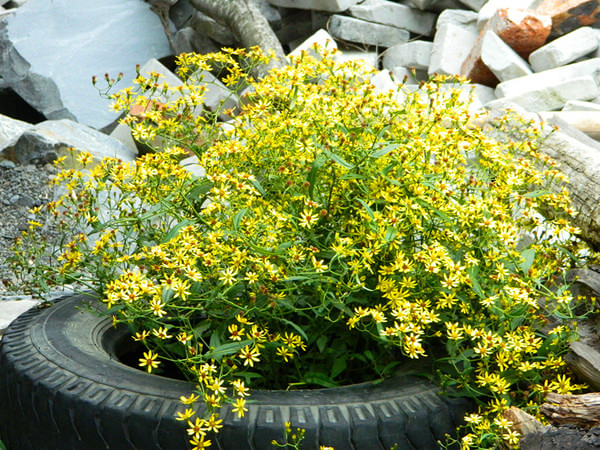
漂亮的轮胎“花坛”。老公送我的路边小花。晃得差不多就回去准备吃吃睡了。小床只够一个人睡，床不怎么样只能将就，一床被子，没脱衣，不冷。 3号，蒙蒙细雨。6：00am起床，洗漱完后老板都还没起床，吃了一些自己带的食物，就出发了
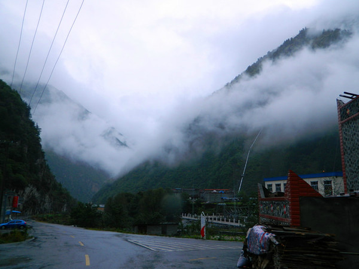
一出门看到云雾缭绕，说不出的感觉，近距离看到山在云之中。 步行大概8分钟到了毕棚沟售票点，人还真多，都从大厅排到外面了，还以为会等个个把小时，结果老公超厉害，把包给我在外面等，他一路杀进去，从买票到上车不过15分钟。 毕棚沟门票80元/人，提前在网上订60元/人，观光车属于强消，50元/人。总体说，我觉得那个地方从设施到各种景色，根本不不值这个价。观光车虽说属强消，不过还比较划算，又爬坡又转弯的，还起码坐了半个小时（估计的没看时间）。
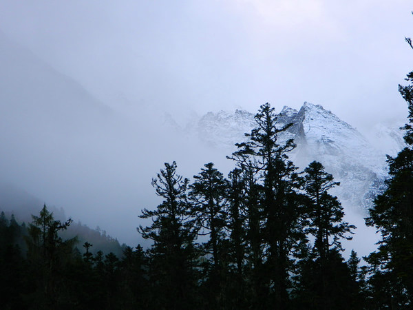
在上海子接待站下车，一下车就看到的雪山。 刚下车有点冷，有点高原，汽车一直转我有点头晕，建议大家还是准备点药预防。幸好保温杯还装了热咖啡，喝一口深吸一口气，缓了一下就没什么事了，沿着旁边的电瓶车上山路线开始前行，目标就是那座雪山。 其实一路走着，个人感觉风景不怎么样，红叶也不怎么红，也没什么特别的，而且一路都是阴天，雨绵绵的。
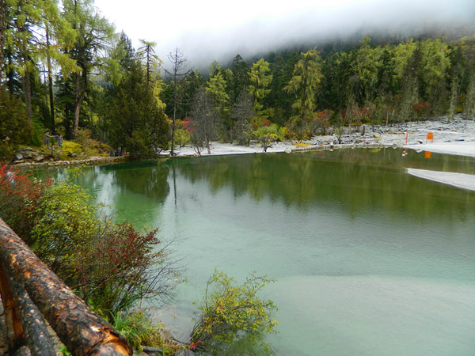
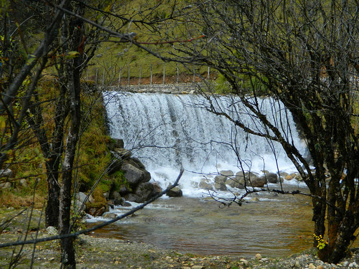
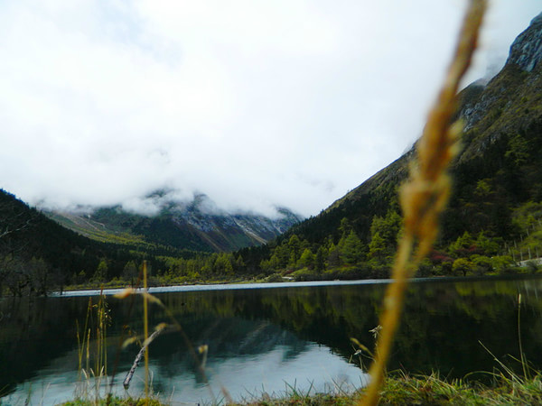
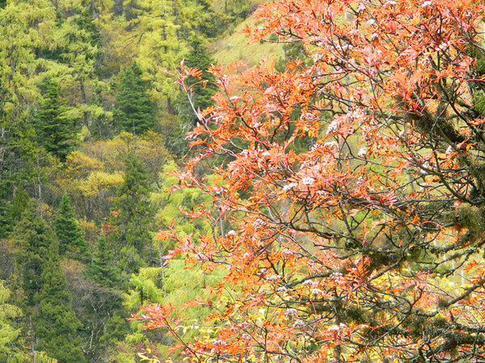
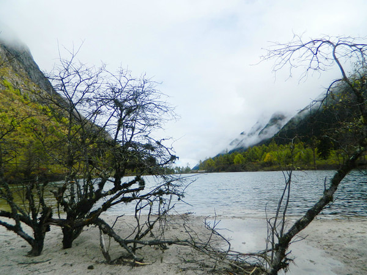
继续往前走，就没什么人了，路也没什么了，反正走就是了，这几天又下雨，一路上泥泞不堪。 走了将近1个小时，还不见一点眉目，看到前面有背包的下来，就问他们走到女皇峰还有多久，他说还要走15分钟，于是我们决定坚持。走了15分钟，还没点眉目，又看到有一群人下来，问他们女皇峰还有多远，他们说，起码再走个3个小时。郁闷，刚才那人不是乱说，这一群人是从四姑娘山过来的，昨晚露营，今早4点过开始走现在才到这。 我们觉得如果我们继续走，可能不能到目的地，到时下山也是个问题，再加上我的体力实在不行，走不动了，为了安全起见，我们跟着这群人打道回府。
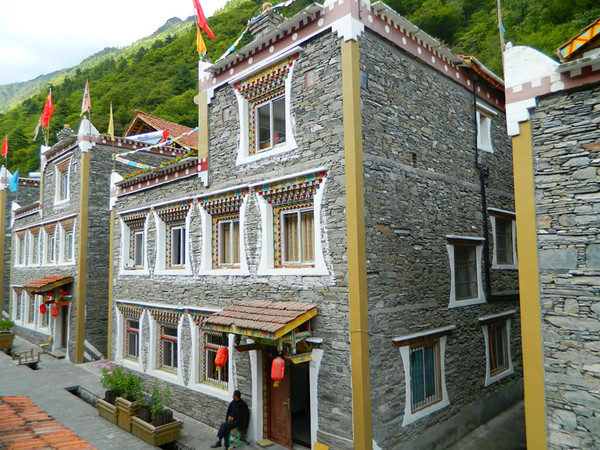
下山走的另一条路（上山左右有两条路），看到的景色好一点。
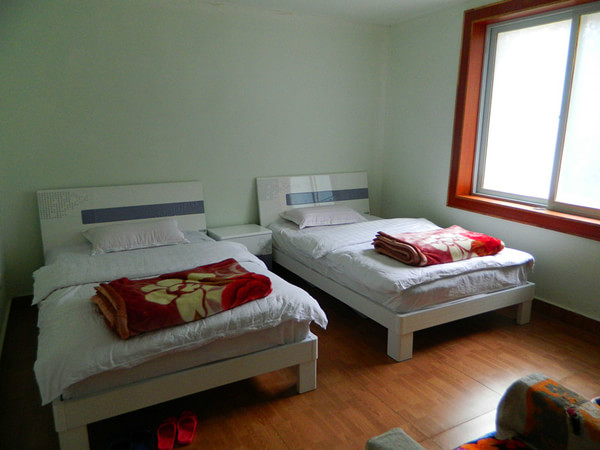
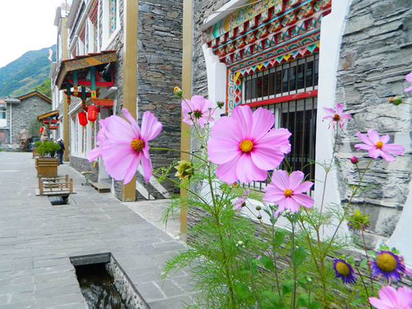
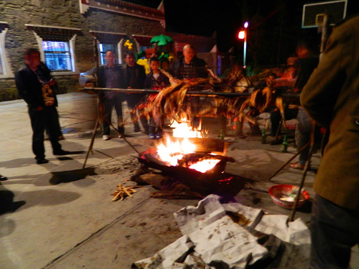